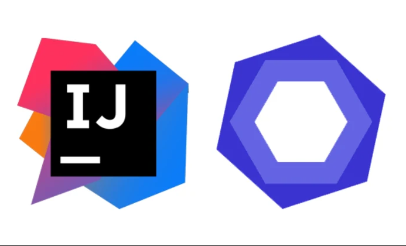

In an ever-evolving software development environment, where innovation and efficiency are critical, coding standards play a critical role that is often overlooked. Through working with ESLint and IntelliJ, I firmly believe that coding standards are often misunderstood and undervalued in the world of software development. While some may consider them trivial things like indentation style or brace placement, I firmly believe that coding standards are the cornerstone of software engineering quality. My purpose in writing this article is to shed light on the importance of coding standards and their crucial role in the process of learning a programming language.
At its core, coding standards consist of a comprehensive set of guidelines and rules that govern the process of writing, formatting, and organizing code. These standards cover a wide range of aspects, from naming conventions for variables and functions to the precise layout of code blocks and the inclusion of meaningful documentation. Although coding standards may seem like a minor detail, they serve several important purposes:
Consistency: Consistent code is not only easier to read and maintain, but it also enhances collaboration between developers. When everyone adheres to the same set of standards, code reviews go more smoothly and debugging becomes less error-prone. At the same time, the unified format and organization make the code more accessible, especially for beginners. As a result, developers can more efficiently explore existing code bases and gain insights from the work of their peers.
Readability: Well-defined coding standards establish a common language within the software development community. They improve the readability of code to a level that even developers who don’t write code can understand it. This attribute proves to be invaluable in long-term software maintenance and knowledge transfer scenarios. In an industry that is constantly changing, coding standards-compliant code remains understandable and adaptable.
Reduce errors: Coding standards can serve as proactive safeguards against coding errors. For example, consistent indentation practices help prevent subtle errors related to scope and logic that might easily slip through code that lacks uniformity. Coding standards make a significant contribution to the reliability and robustness of software by identifying potential problems before they escalate into major problems.
Learning aids: I firmly believe that adhering to coding standards can be an effective means of mastering a programming language. When we write code according to established standards, we not only write quality code, but we also gain a deeper understanding of the language’s syntax and best practices.
ESLint is an open source JavaScript linting tool that is indispensable for developers working hard to maintain coding standards. It acts as an automated code analysis tool, carefully scanning JavaScript code for deviations from predefined rules.
Using ESLint with IntelliJ provides aspiring programmers with a valuable opportunity to gain important experience. The presence of a “green check mark” indicates that the code complies with ESLint rules. This green check mark is a valuable indicator that the code follows predefined coding standards. This in turn promotes code consistency, enhances readability, and reduces the likelihood of common coding errors. Additionally, green checkmarks take on higher importance in the context of future team projects.
However, it’s worth noting that getting that coveted green checkmark in ESLint can be challenging and sometimes a demanding experience, especially when ESLint issues warnings that your code needs to be adjusted. For individuals embarking on their programming journey, the process not only presents technical challenges, but also creates an implicit sense of pressure to relentlessly pursue the green tick. It acts as an ongoing feedback loop, prompting developers to continually revisit their code, thereby improving code quality and adhering to coding standards.
In summary, the presence of a green checkmark in ESLint is a strong indicator of code quality and coding standards compliance. While the process of adopting ESLint may present challenges initially, I firmly believe that it ultimately helps create cleaner, more maintainable code. This in turn ensures that the code adheres to coding standards, maintaining code consistency and quality.
In the world of software development, coding standards are more than just a formality. They are the pillars upon which software engineering quality is built. The many benefits of adhering to coding standards include consistency, readability, reduced errors, and increased learning opportunities. Although the process of using ESLint and IntelliJ can be challenging initially, and the process of getting a green checkmark in ESLint can be difficult, a green checkmark is a symbol of code quality and adherence to coding standards. Not only have ESLint and IntelliJ improved the quality of our code over time, but in team projects these tools are integral to ensuring that all contributors move forward according to established standards.
As the field of software development continues to expand and projects increase in scale, the significance of coding standards becomes increasingly evident. Coding standards are as vital as English grammar; they serve as guiding principles for developers in navigating the intricacies of programming languages. These standards ensure that their creations are not only functional but also maintainable and easily comprehensible.